Candidates sell to an AI buyer for up to seven minutes. The hiring manager sees a score range and the lines behind it, and makes the decision.
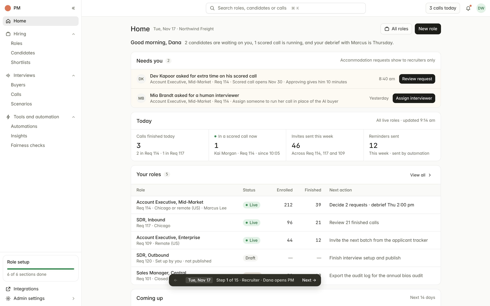
Open the prototype ↗ It’s built for a laptop screen.01:22SamFord.
01:24JordanSorry, what was that?
// In Jordan's prompt Turn-taking: - If the rep says only "mm-hmm", "yeah", "right" or "okay" while you're talking or right after, treat it as listening. Finish your thought, then stop and wait. - If the rep pauses mid-sentence, wait. Don't fill the silence. // In the voice platform's settings export const TURN = { turn_eagerness: 'patient', interruption_ignore_terms: ['mm-hmm', 'uh-huh', 'yeah', 'right', 'okay'], };
// In the scoring prompt - Every skill score must cite at least one line the CANDIDATE said, copied word for word from the transcript. Never cite the buyer as evidence. - Ignore fillers, pauses, grammar, accent, dialect, voice, speed, and transcription errors. - Ignore anything about the person: name, gender, age, background, nationality. // After five runs. Runs whose quotes aren't in the transcript are already dropped. skills.push(widen(Math.min(...scores), Math.max(...scores))); status: ok.length >= 3 ? 'scored' : 'needs_review'
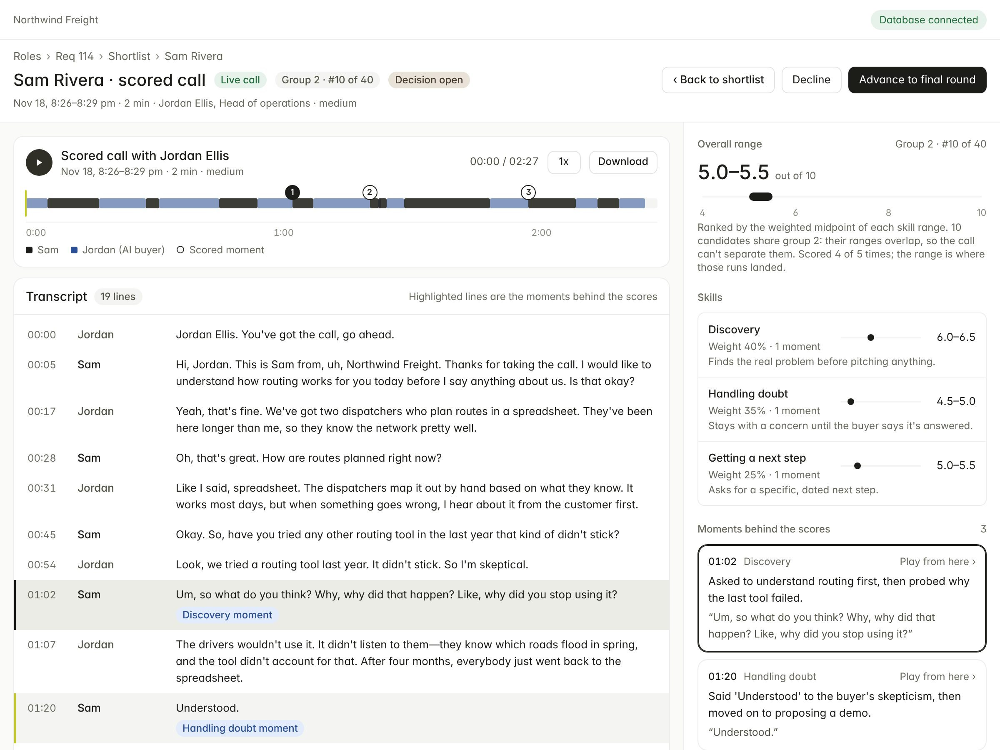
Live callSam Rivera’s call review. Each score links to the line it came from. Click it to hear that part of the call.
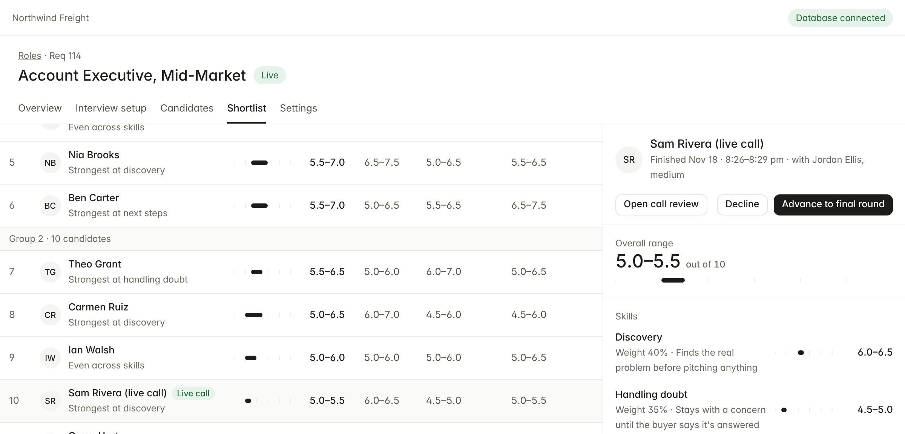
Live callCandidates whose ranges overlap are grouped together. Their order within a group isn't meaningful.
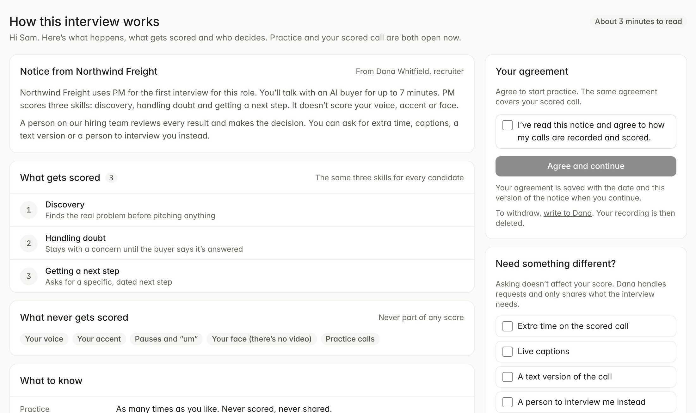
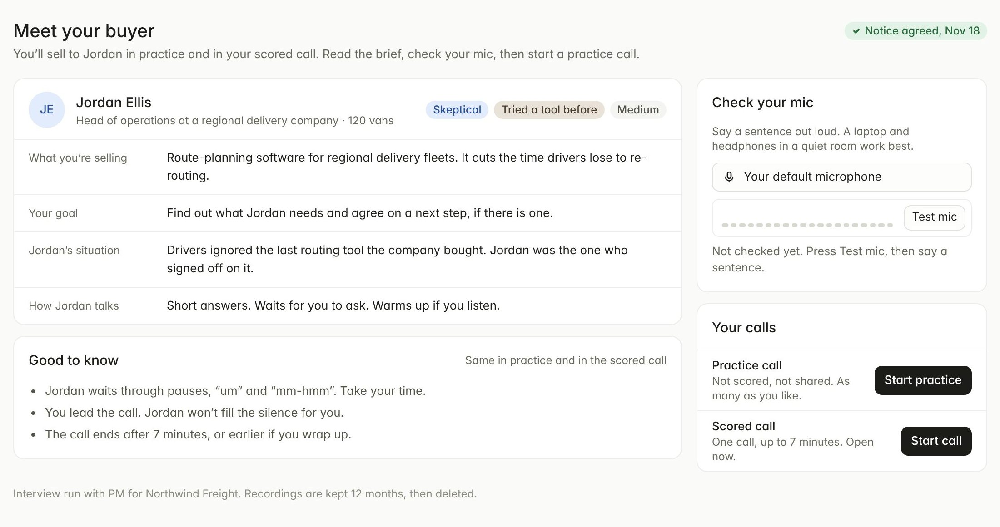
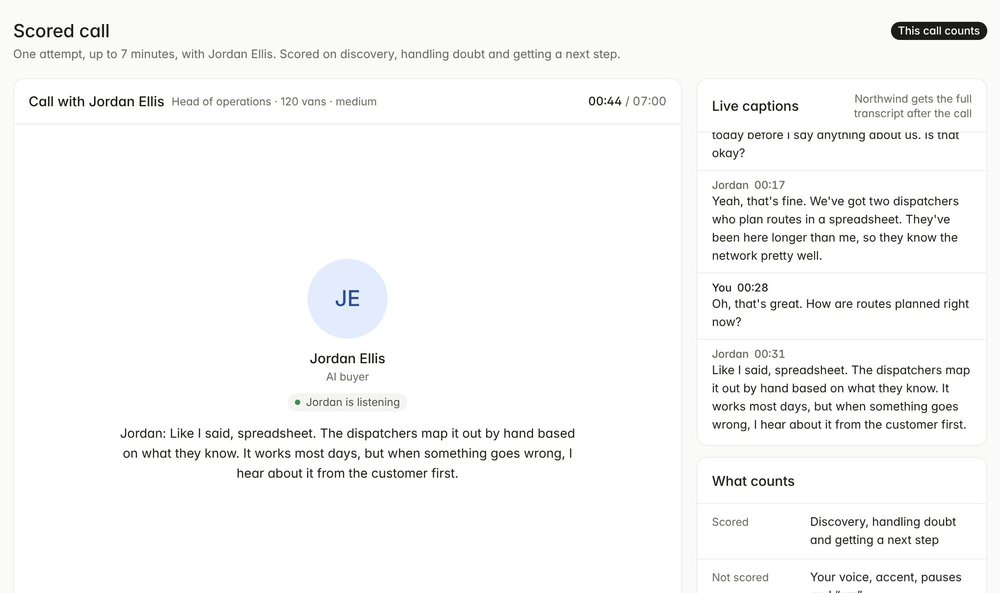
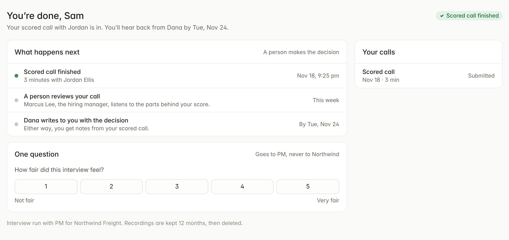
About 3 minutes to read
What never gets scored
Jordan waits through pauses
Your clock is paused
Asking doesn't affect your score
Questions? Write to Dana
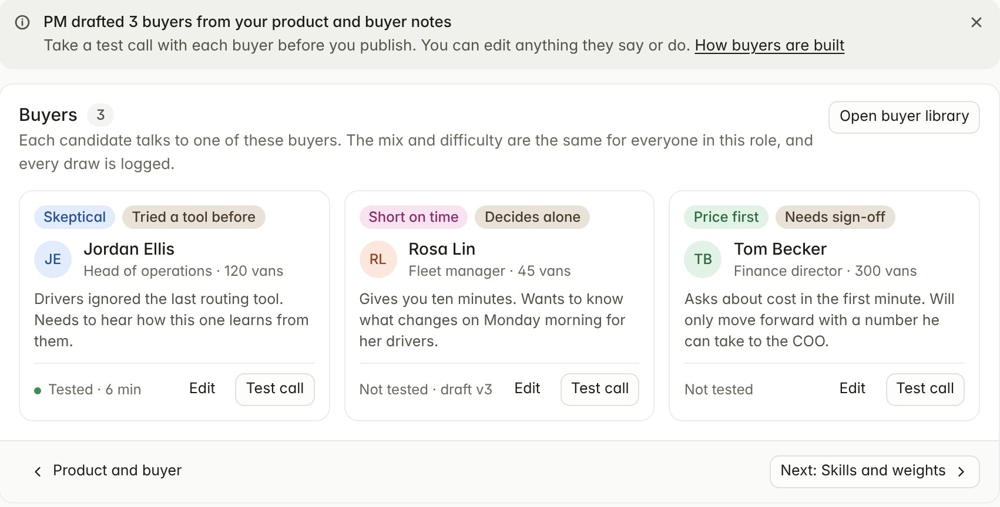
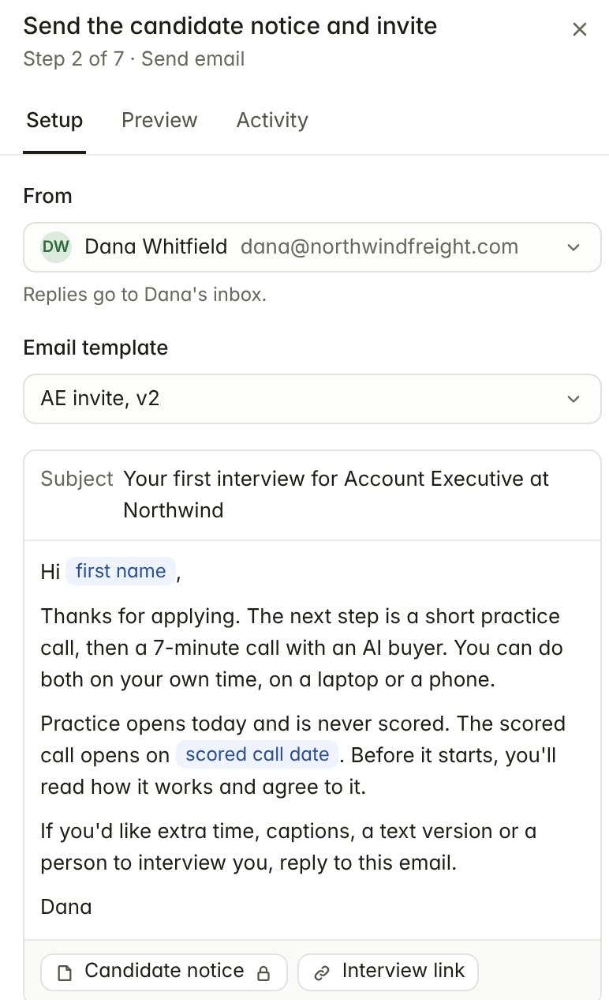
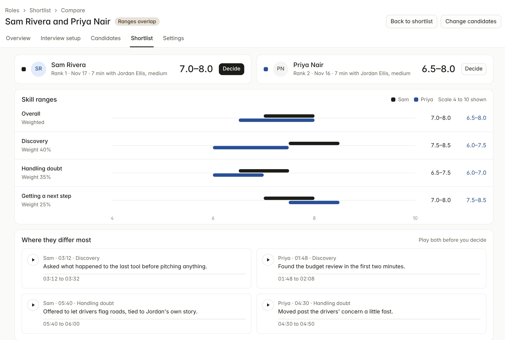
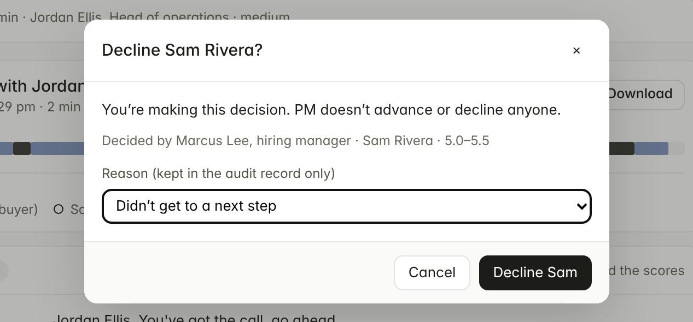
Prototype Steps 1–3 show sample data. Step 4 is the working app.
| What PM keeps | Hiring manager | Recruiter | Audit record | Nobody at the employer |
|---|---|---|---|---|
| Scored call: audio and transcript | ||||
| Decisions and reasons, every change | ||||
| Consent: time and notice version | ||||
| All five scoring runs, dropped ones too | ||||
| Accommodation requests | ||||
| Practice calls | ||||
| Candidate's fairness rating | ||||
| Video, face, demographics | Not collected | |||
| Feature | 2025 testers | 2025 journey map | Simulated tests | Live call | Regulation |
|---|---|---|---|---|---|
| Notice → practice → scored call → done | |||||
| Practice for everyone, never shown | |||||
| Jordan: short, guarded, warms up | |||||
| Patient turn-taking | |||||
| Score ranges and groups | |||||
| Every score linked to a moment | |||||
| Consent, audit record, fairness checks |
reconnects = case when ${conversationId} = any(provider_call_ids) or cardinality(provider_call_ids) = 0 then reconnects else reconnects + 1 end